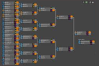

Balance Path 3714
T2 Buff, Shielded CZAR, new Loyalist ability and more
This patch aims to improve the options of Aeon specifically as they have become one of the least played factions. The Czar will now have a personal shield to protect it, and much stronger AA weapons. The Harbinger also gets a quite substantial buff and the Specter gets a new weapon.
Blitz Tournament Series
A new tournament format has been introduced leading to diffrent points style never seen before
5th Ladder League Season
ThomasHiatt has kicked off to an early lead blazing ahead by 14 points already
Win prizes and avatars!
Top the leaderboard. Win!
Promotions Councilor Nominations
FAF is currently seeking a new PromotionsConcillor. Could this be your chance to give back to the community that has given you so much?
Opinion: Best UI Mods
Over 15 UI mods reviewd and explained by our resident Gamacilor, keyser